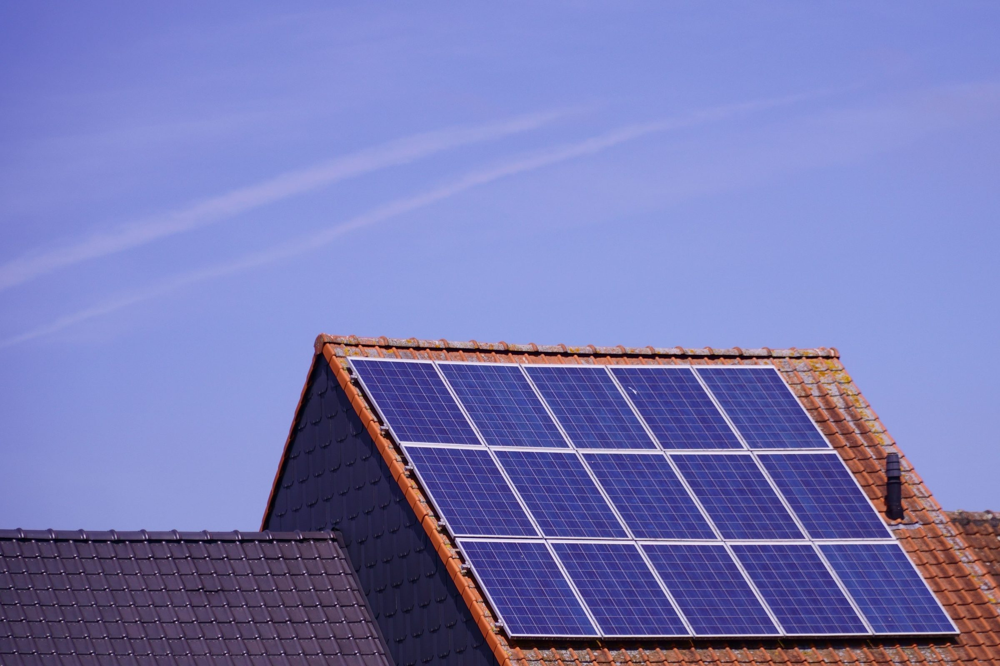
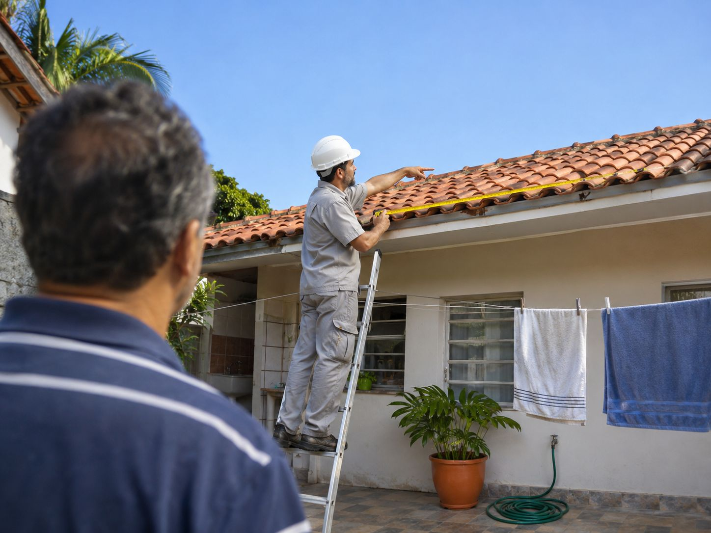
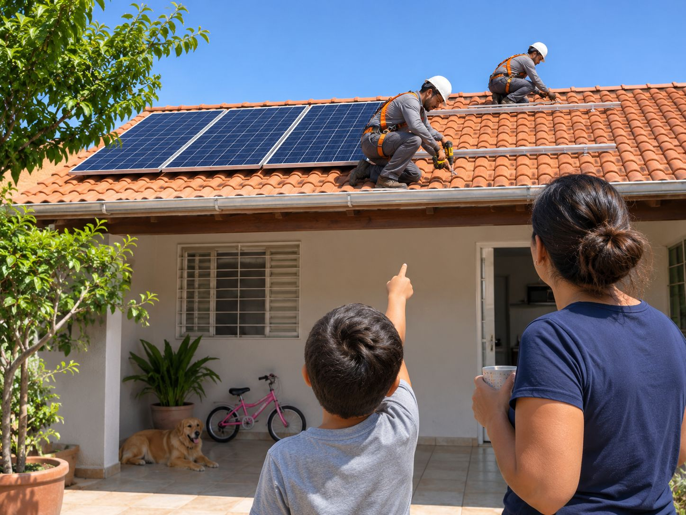
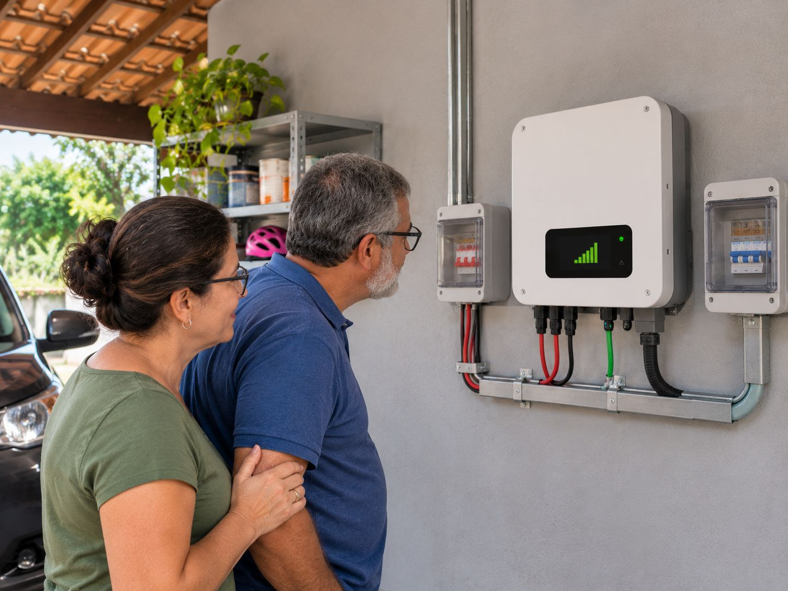

Energia solar na sua casa.
Sua conta de luz reduz em até 90%.
Painéis solares no seu telhado, sem você se preocupar. A Ravena cuida desde a compra do seu painel até a instalação e garantia.
Ideal para contas a partir de R$ 450/mês. Resposta pelo WhatsApp no mesmo dia útil.
- 4,8 137 avaliações no Google
- 412 casas com sistema instalado
- 6 anos em Sorocaba, equipe própria
Em Sorocaba, a conta de R$ 780 virou R$ 118.
Uma das 412 casas que instalamos na região: um sistema de 6,4 kWp (o tamanho do sistema), ligado em março de 2025. Na média dos 12 meses seguintes, a conta ficou em R$ 118: 85% a menos, dentro dos 75% a 90% de queda que vemos na média dos nossos clientes.
Quem instalou foi a nossa equipe, com carteira assinada. No primeiro ano acompanhamos a produção, e somos assistência técnica autorizada da marca do inversor, o aparelho que converte a energia dos painéis para a sua casa.
AntesR$ 780
Depois, na médiaR$ 118
E a sua conta, quanto cairia?
Ideal para contas a partir de R$ 450/mês. Resposta pelo WhatsApp no mesmo dia útil.
Do primeiro contato ao sistema ligado.



Antes de assinar, você não paga nada.
- Simulação. Você manda nome, WhatsApp, cidade e o valor da conta. A resposta chega no mesmo dia útil.
- Visita técnica. Nosso técnico mede o seu telhado, sem custo e sem compromisso.
- Proposta. Três tamanhos de sistema para comparar. Na maioria das casas, de R$ 14 mil a R$ 19 mil.
A papelada e a obra ficam com a gente.
- Assinatura. À vista ou financiado por dois bancos parceiros. Entrada zero é possível.
- Projeto. Desenhamos o sistema e cuidamos da aprovação da CPFL, a parte mais longa do prazo.
- Instalação. Dois dias de obra no seu telhado. Se a obra causar infiltração, a garantia de 5 anos cobre.
Ligado, e a gente continua por perto.
- Vistoria e ligação. A CPFL confere a instalação e libera o sistema. Da assinatura até aqui: de 45 a 60 dias.
- Funcionamento. A conta cai de 75% a 90% na média dos nossos clientes. Não zera: sempre resta a taxa mínima e o custo do fio.
- Acompanhamento. No primeiro ano, acompanhamos a produção e ligamos se cair fora do previsto. Garantia de 25 anos no painel e 10 no inversor.
- 45 a 60 diasda assinatura ao sistema ligado
- 2 diasde obra no seu telhado
- 5 anosde garantia da instalação, incluindo infiltração
Dúvidas frequentes
Como sei que vocês não vão sumir daqui a dois anos?
Faz todo sentido perguntar: por aqui, já teve empresa que fechou e deixou obra pela metade. O que a gente pode te mostrar é o que já está de pé: 6 anos em Sorocaba, 11 pessoas e 412 casas instaladas. A equipe que sobe no seu telhado é nossa, com carteira assinada, e não terceirizamos a instalação.
Somos assistência técnica autorizada da marca do inversor que instalamos. E a garantia vem por escrito: 25 anos de desempenho do painel, 10 anos do inversor e 5 anos da nossa instalação.
Isso não vai estragar meu telhado?
É o segundo medo que mais ouvimos, principalmente de quem tem telha de barro. Antes de qualquer coisa, um técnico nosso vai até a sua casa e mede o telhado, sem custo e sem compromisso. Quem instala é a nossa equipe, e a obra leva dois dias.
Se a obra causar infiltração, a nossa garantia de 5 anos da instalação cobre. Está no contrato, não depende de boa vontade.
Ouvi dizer que “taxaram o sol”. Ainda vale a pena?
Vale. Desde a Lei 14.300, a energia que o seu sistema manda para a rede durante o dia paga uma pequena cobrança, que aumenta um pouco a cada ano. Na prática, o que sobra de energia rende um pouco menos de crédito do que rendia antes.
Mesmo com essa cobrança, o que vemos hoje: na média dos nossos clientes, a conta cai de 75% a 90% e o investimento volta em 3 a 4 anos. Na simulação, o nosso vendedor faz a conta com o valor da sua conta de luz, não com uma promessa genérica.
E se eu mudar de casa?
O sistema valoriza o imóvel e pode ser transferido para o próximo dono. Mesmo assim, seja sincero com a conta: ela fecha melhor para quem não pretende vender tão cedo, porque o retorno leva de 3 a 4 anos.
E em dia nublado? E à noite?
Em dia nublado o sistema produz menos, e à noite não produz. O que compensa é o crédito acumulado ao longo do mês: nas horas de sol, o excedente vai para a rede da CPFL, e você usa esse crédito quando precisa. A conta fecha no mês, não no dia.
Preciso de bateria?
Não. Em casa ligada na rede da CPFL, o crédito de energia faz o papel da bateria. Por isso o sistema fica mais simples e mais barato. A Ravena não vende bateria.
Minha conta de luz vai zerar?
Não, e desconfie de quem prometer isso. Sempre resta a taxa mínima e o custo do fio, que é o uso da rede da CPFL. O que a gente garante é a queda: de 75% a 90% na média dos nossos clientes. Em Sorocaba, uma conta de R$ 780 virou, na média, R$ 118.
Quanto custa? Tem financiamento?
Na maioria das casas, o investimento fica entre R$ 14 mil e R$ 19 mil, para um sistema de doze a vinte painéis. Depois da visita, você recebe três tamanhos de sistema para comparar.
Trabalhamos com dois bancos parceiros. Entrada zero é possível, e na maioria dos casos a parcela fica perto do valor que você já paga de luz hoje.